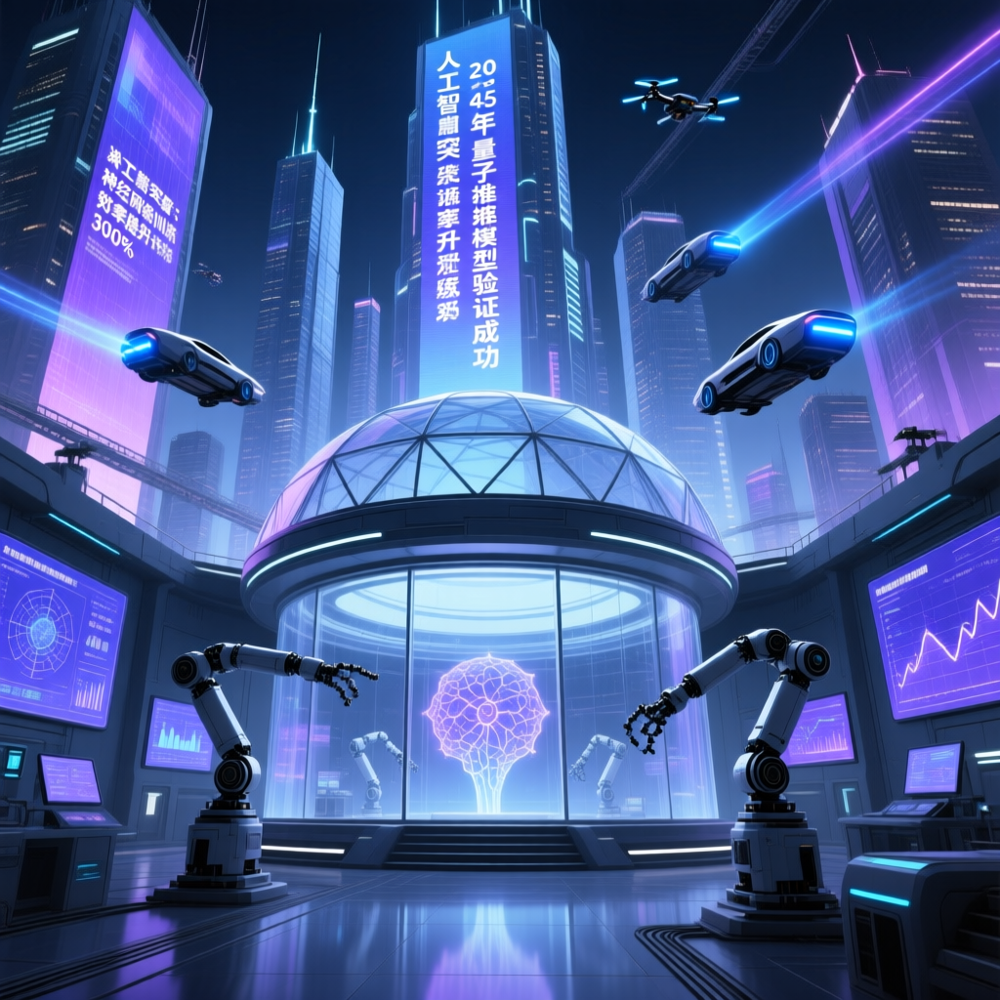

ChatGPT 引爆 LLM 革命三年後，AI 正從語言生成轉向推理規劃與自主行動。華盛頓郵報 AI Tech Brief 深度解析：後 LLM 時代的技術變革與產業影響。

後 LLM 時代已經來臨——人工智慧正從單純的語言模型，轉向更深層的推理、規劃與自主決策能力。
— Washington Post AI Tech Brief，2026 年 4 月 21 日大型語言模型在語言生成方面已接近天花板，各廠商轉向推理增強、工具使用與多模態整合，以突破純文字輸出的限制。
AI Agent（AI 代理）成為新戰場，能自主規劃、多步推理、調用工具、執行複雜任務，代表 AI 從被動回應轉向主動行動。
文字、圖像、音頻、影片一體化處理成主流，AI 能同時理解和生成多種形式的內容，實現真正的跨模態認知。
測試時推理（Test-Time Compute）技術讓模型能「思考更久」，以計算換取準確性，解決複雜數學與邏輯問題。
檢索增強生成（RAG）技術結合向量資料庫，讓 AI 能存取海量外部知識，突破模型訓練資料的時效性限制。
小型化模型與量化技術使 AI 能在本地設備運行，隱私保護、低延遲、離線運算成為新焦點，不再完全依賴雲端。
隨著 AI 能力提升，安全對齊研究備受重視，防止模型產生有害輸出、保證人類意圖一致成為核心挑戰。
AI 程式碼助手從簡單補全升級到完整專案架構設計、測試生成、Bug 修復，軟體開發進入「Copilot 時代」。
AI 生成訓練資料（Synthetic Data）成為突破數據瓶頸的關鍵，模型能用更高品質的 AI 生成內容自我提升。
開源模型（如 Llama、Mistral）快速追趕閉源巨頭，成本競爭加劇，模型市場進入百家爭鳴的多元時代。
| 維度 | LLM 時代（2022-2025） | 後 LLM 時代（2026+） |
|---|---|---|
| 核心能力 | 語言生成、文本補全 | 推理規劃、工具使用、自主行動 |
| 模型架構 | Transformer 純文字 | 多模態一體化、MoE 混合專家 |
| 部署方式 | 雲端 API 調用 | 雲端 + 邊緣混合部署 |
| 應用形態 | Chatbot、助理問答 | AI Agent、自動化流程、無人監督任務 |
| 成本模式 | 按 Token 計費 | 按任務結果、訂閱制、訂閱 + 用量混合 |
| 安全重點 | 內容過濾、防護提示 | 對齊研究、Agent 約束、持續監控 |
| 廠商 | 旗艦模型 | 主要方向 | 優勢 |
|---|---|---|---|
| OpenAI | GPT 系列 | 推理 Agent、工具調用 | 先發優勢、生態完整 |
| Gemini 系列 | 多模態、原生整合 Google 產品 | 搜尋數據、多模態領先 | |
| Anthropic | Claude 系列 | 安全對齊、長上下文 | 對齊研究嚴謹、上下文超長 |
| Meta | Llama 系列 | 開源、輕量化 | 開源社群活躍、部署成本低 |
| 任務類型 | LLM 時代表現 | 後 LLM 時代表現 | 提升幅度 |
|---|---|---|---|
| 數學推理 | 基礎計算、簡單證明 | 奧數級難題、複雜證明 | ↑ 3-5 倍 |
| 程式開發 | 片段補全、簡單函數 | 完整架構、測試、部署 | ↑ 5-10 倍 |
| 多步規劃 | 單輪問答 | 自主規劃、多工具協調 | ↑ 10+ 倍 |
| 事實準確性 | 幻覺問題常見 | RAG + 推理減少幻覺 | ↑ 2-3 倍 |
後 LLM 時代的核心特徵，是 AI 不再只是「被動回答問題」，而是能主動規劃、調用工具、執行複雜任務。這意味著 AI 從工具變成助手，從玩具變成生產力。
後 LLM 時代並非 LLM 的終結，而是 LLM 的進化。語言模型仍是核心引擎，但周邊技術（Agent、工具調用、推理增強）將決定誰能勝出。下一個十年，AI 競爭的主戰場是「讓 AI 做事」而非「讓 AI 說話」。
後 LLM 時代的來臨，標誌著 AI 從「會說話」走向「會做事」。Agent、AI 推理、多模態整合將定義未來 5 年的 AI 競爭格局。